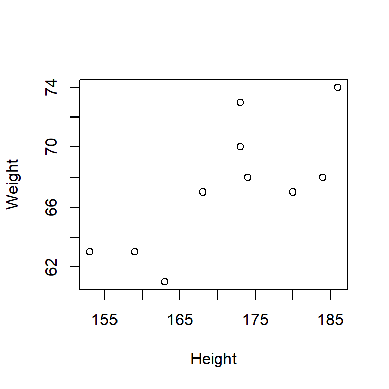

Chapter 7 Exercises Day 1
Write an executable and commented R script.
Essential components
- Header
- Set the working directory
- Useful, short, and precise comments
Formal guidelines
- Rows not longer than 80 symbols
- Well-arranged code by using indentions and spaces
- Spaces before and after binary operators (
<-,+,-,~,=,<,>,<=,>=,==etc.) - No space between function name and bracket
After executing the script (with the function source()) all computations
should have been executed and all objects should be available in the
working memory.
Create two vectors
height(in cm) andweight(in kg) with the values \((159~173~173~184~168~163~180~186~153~174)'\) and \((63~73~70~68~67~61~67~74~63~68)'\).- Compute mean, standard deviation, variance, and correlation for both vectors.
- Create a scatter plot with height on the \(x\) axis and weight on the \(y\) axis. Use meaningful axis labels.
- Calculate the body mass index for each subject:
\[ \text{BMI} = \frac{\text{weight in kg}}{\text{(height~in~m)}^2}. \]
height <- c(159, 173, 173, 184, 168, 163, 180, 186, 153, 174)
weight <- c(63, 73, 70, 68, 67, 61, 67, 74, 63, 68)
(m_h <- mean(height))## [1] 171.3(s_h <- sd(height))## [1] 10.70877(v_h <- var(height))## [1] 114.6778(m_w <- mean(weight))## [1] 67.4(s_w <- sd(weight))## [1] 4.247875(v_w <- var(weight))## [1] 18.04444(kor <- cor(weight, height))## [1] 0.7469363plot(weight ~ height, xlab = "Height", ylab = "Weight")
(bmi <- weight/(height/100)^2)## [1] 24.91990 24.39106 23.38869 20.08507 23.73866 22.95909 20.67901 21.38976 26.91273
## [10] 22.46003- Create a column vector \(\mathbf{x} = (1~5~8~3~7~2~6)'\). Create another
column vector \(\mathbf{y}\) of the same length containing the odd numbers
\(1, 3, 5, \ldots\) using the function
seq(). Compute a vector \(\mathbf{z}\) as linear combination of \(\mathbf{x}\) and \(\mathbf{y}\): \(\mathbf{z} = 4\mathbf{x} + 2\mathbf{y}\).
x <- c(1, 5, 8, 3, 7, 2, 6)
y <- seq(1, by = 2, along.with = x)
z <- 4 * x + 2 * y- Combine \(\mathbf{x}\), \(\mathbf{y}\), and \(\mathbf{z}\) into a matrix \(\mathbf{A}\). Treat \(\mathbf{x}\), \(\mathbf{y}\), and \(\mathbf{z}\) as column vectors. Then create a matrix \(\mathbf{B}\) with \(\mathbf{x}\), \(\mathbf{y}\), and \(\mathbf{z}\) as row vectors. Compute the matrix product \(\mathbf{B}\mathbf{A}\).
A <- cbind(x, y, z)
B <- t(A)
B %*% A## x y z
## x 188 240 1232
## y 240 455 1870
## z 1232 1870 8668- Create a data frame with two independent variables: Hand with
levels “right” and “left” and Condition with levels 1, 2, 3,
4, and 5. Simulate reaction times for 50 subjects. Assume reaction time
is normally distributed with \(RT \sim N(\mu = 400,\sigma^2 = 625)\). There
are 10 subjects in each condition. Use functions
str()andsummary()on your data frame. What does the output tell you?
dat <- data.frame(
hand = factor(rep(c("left","right"), each = 25), levels = c("right","left")),
cond = factor(rep(1:5, 10)),
RT = rnorm(n = 50, mean = 400, sd = sqrt(625))
)
str(dat)## 'data.frame': 50 obs. of 3 variables:
## $ hand: Factor w/ 2 levels "right","left": 2 2 2 2 2 2 2 2 2 2 ...
## $ cond: Factor w/ 5 levels "1","2","3","4",..: 1 2 3 4 5 1 2 3 4 5 ...
## $ RT : num 427 433 402 420 376 ...summary(dat)## hand cond RT
## right:25 1:10 Min. :345.9
## left :25 2:10 1st Qu.:383.0
## 3:10 Median :402.3
## 4:10 Mean :401.9
## 5:10 3rd Qu.:418.2
## Max. :452.6- Go to
http://socserv.socsci.mcmaster.ca/jfox/Books/Applied-Regression-3E/ and
download
Vocabulary.txtfrom the data sets there (Fox, 2008). Store it in a local folder on your computer. Set that folder as your working directory usingsetwd(). Useread.table()to load this data frame into R’s working memory. Hint: With?read.tableyou can get documentation for this function. Find out the number of observations, number of variables, names of variables, descriptive statistics for the dependent variables, and the levels of the factor variables.
voc <- read.table("data/Vocabulary.txt", header = T, stringsAsFactors = TRUE)
dim(voc)## [1] 21638 5str(voc)## 'data.frame': 21638 obs. of 5 variables:
## $ id : int 20040001 20040002 20040003 20040005 20040008 20040010 20040012 20040013 20040016 20040017 ...
## $ year : int 2004 2004 2004 2004 2004 2004 2004 2004 2004 2004 ...
## $ sex : Factor w/ 2 levels "Female","Male": 1 1 2 1 2 2 1 2 2 1 ...
## $ education : int 9 14 14 17 14 14 12 10 11 9 ...
## $ vocabulary: int 3 6 9 8 1 7 6 6 5 1 ...names(voc)## [1] "id" "year" "sex" "education" "vocabulary"summary(voc)## id year sex education vocabulary
## Min. :19740001 Min. :1974 Female:12312 Min. : 0.0 Min. : 0.000
## 1st Qu.:19821102 1st Qu.:1982 Male : 9326 1st Qu.:12.0 1st Qu.: 5.000
## Median :19891156 Median :1989 Median :12.0 Median : 6.000
## Mean :19889570 Mean :1989 Mean :12.8 Mean : 5.996
## 3rd Qu.:19960795 3rd Qu.:1996 3rd Qu.:15.0 3rd Qu.: 7.000
## Max. :20042811 Max. :2004 Max. :20.0 Max. :10.000- You can use the
$-operator to extract single variables from the data frame “Vocabulary.” Extract the variablevocabularyand calculate \(mean\) and \(sd\) for it. Look at the 217th row of your data frame. What can you tell about that subject? When was this person tested? Sex? How long went this person to school? What score did it have in the vocabulary test? Next, extract only those cases from your data frame that are male, got tested in 1974 and scored below 2 in the vocabulary test.
mean(voc$vocabulary)## [1] 5.996164sd(voc$vocabulary)## [1] 2.165205voc[217,]## id year sex education vocabulary
## 217 20040401 2004 Female 14 5voc[voc$year == "1974" & voc$sex == "Male" & voc$vocabulary < 2,]## id year sex education vocabulary
## 2765 19740016 1974 Male 12 1
## 2767 19740018 1974 Male 0 1
## 2839 19740092 1974 Male 4 1
## 2877 19740131 1974 Male 11 1
## 2947 19740202 1974 Male 12 1
## 3106 19740364 1974 Male 11 1
## 3197 19740456 1974 Male 10 1
## 3469 19740735 1974 Male 8 1
## 3569 19740836 1974 Male 7 1
## 3787 19741065 1974 Male 9 0
## 3910 19741190 1974 Male 12 1
## 3916 19741196 1974 Male 6 0
## 4033 19741315 1974 Male 3 1
## 4036 19741320 1974 Male 14 1
## 4042 19741327 1974 Male 2 0
## 4105 19741391 1974 Male 8 0
## 4185 19741474 1974 Male 12 0- Sort your data frame in a way that people with the same number of years
of education are grouped together; now, within that, group by their
score of the vocabulary test. Hint: Use
order(). Then you can apply functionshead()andtail()to look at the first and last 20 observations, respectively. What do you hypothesize about the relationship of “years of education” and “score in vocabulary test?”
head(voc[order(voc$education, voc$vocabulary),], n = 20)## id year sex education vocabulary
## 9246 19840436 1984 Female 0 0
## 10908 19870704 1987 Female 0 0
## 11594 19871441 1987 Male 0 0
## 11783 19872195 1987 Male 0 0
## 11902 19872336 1987 Female 0 0
## 19694 19961907 1996 Female 0 0
## 2622 20002546 2000 Female 0 1
## 2767 19740018 1974 Male 0 1
## 6001 19780377 1978 Male 0 1
## 7104 19781523 1978 Male 0 1
## 7401 19820313 1982 Female 0 1
## 11877 19872308 1987 Female 0 1
## 11880 19872311 1987 Male 0 1
## 3024 19740281 1974 Male 0 3
## 3421 19740686 1974 Male 0 3
## 4096 19741381 1974 Male 0 3
## 4862 19760700 1976 Female 0 3
## 11863 19872294 1987 Male 0 3
## 17069 19940736 1994 Male 0 4
## 286 20040528 2004 Male 0 5tail(voc[order(voc$education, voc$vocabulary),], n = 20)## id year sex education vocabulary
## 19057 19960918 1996 Male 20 10
## 19149 19961061 1996 Male 20 10
## 19292 19961280 1996 Male 20 10
## 19296 19961288 1996 Male 20 10
## 19342 19961358 1996 Male 20 10
## 19343 19961359 1996 Male 20 10
## 19771 19962028 1996 Male 20 10
## 19877 19962202 1996 Male 20 10
## 19975 19962348 1996 Female 20 10
## 20183 19962672 1996 Male 20 10
## 20361 19980056 1998 Male 20 10
## 20470 19980306 1998 Male 20 10
## 20473 19980313 1998 Female 20 10
## 20666 19980740 1998 Male 20 10
## 20706 19980826 1998 Male 20 10
## 20764 19980952 1998 Female 20 10
## 21180 19981861 1998 Male 20 10
## 21225 19981967 1998 Female 20 10
## 21324 19982182 1998 Female 20 10
## 21384 19982295 1998 Male 20 10- We now want to know if there are sex differences in “years of education”
and “score in vocabulary test.” For that we want to look at the mean
scores for men and women separately. Hint: Use
aggregate(). You can also look at the means for every year checking if, e.,g., “years of education” have increased within the last couple of decades.
aggregate(voc[,4:5], by = list(voc$sex), FUN = mean)## Group.1 education vocabulary
## 1 Female 12.64352 6.032732
## 2 Male 12.99517 5.947888aggregate(voc[,4:5], by = list(voc$year), FUN = mean)## Group.1 education vocabulary
## 1 1974 11.87483 6.024205
## 2 1976 11.83473 6.044630
## 3 1978 12.04380 5.964960
## 4 1982 12.21126 5.741149
## 5 1984 12.47575 5.994294
## 6 1987 12.57177 5.694461
## 7 1988 12.75326 5.766304
## 8 1989 12.84401 5.940083
## 9 1990 13.11620 6.138498
## 10 1991 12.90219 6.090531
## 11 1993 13.10365 6.033564
## 12 1994 13.30543 6.167391
## 13 1996 13.43676 6.039657
## 14 1998 13.39047 6.131437
## 15 2000 13.30587 6.011442
## 16 2004 13.74965 6.210709References
Fox, J. (2008). Applied regression analysis and generalized linear models. Sage Publications.